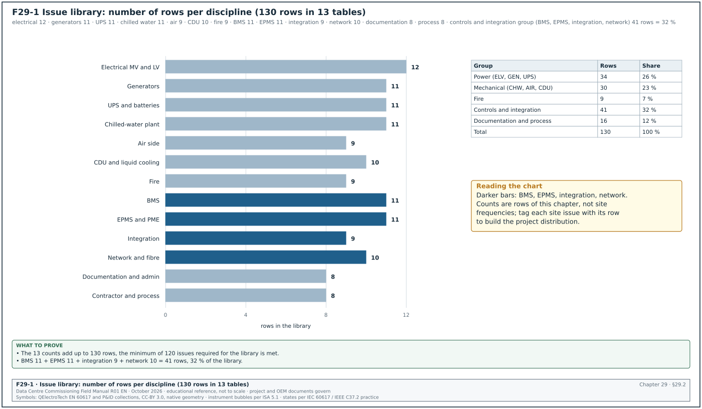
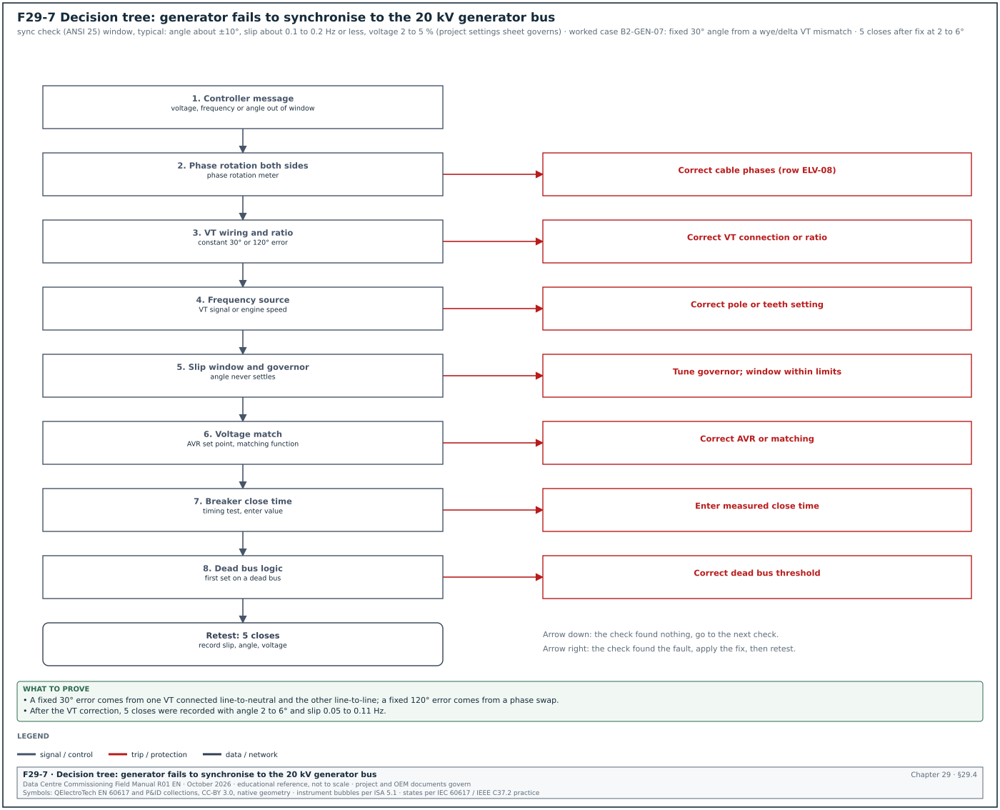
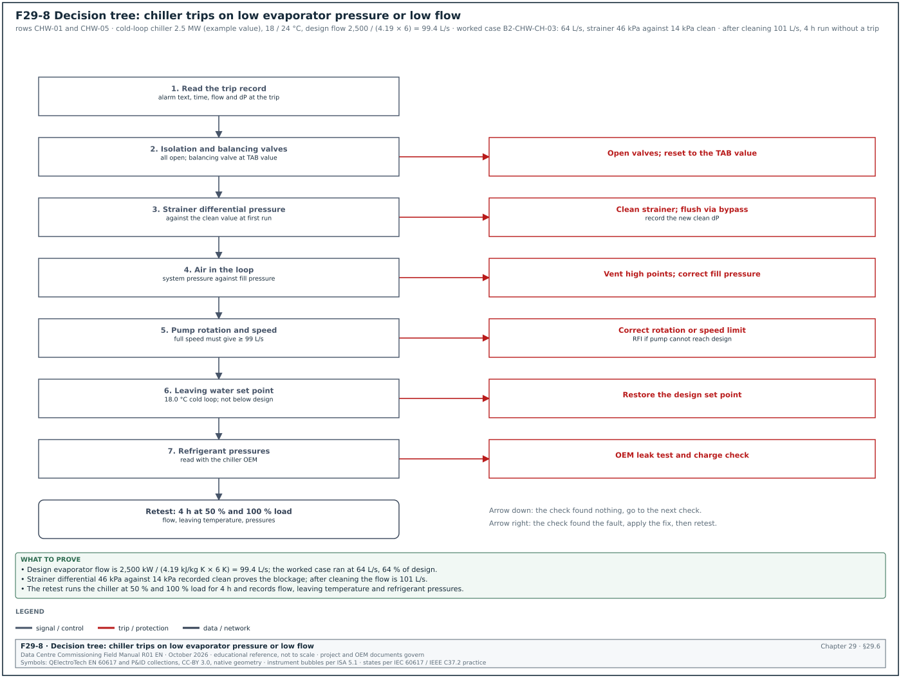
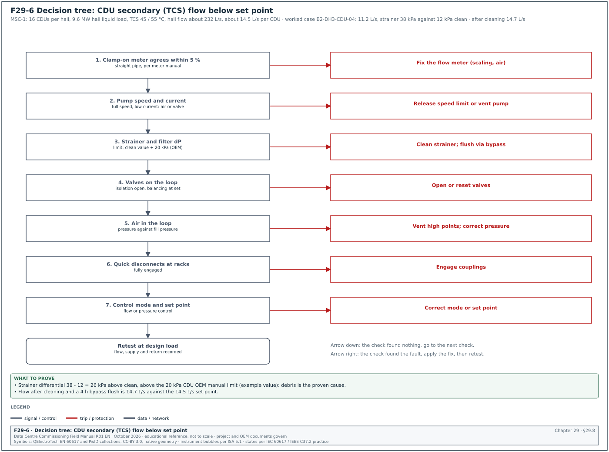
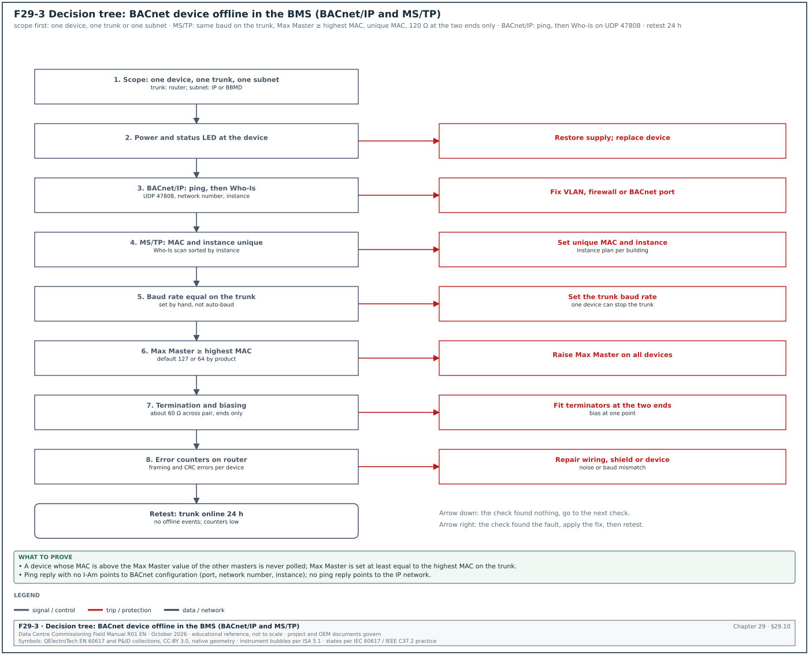
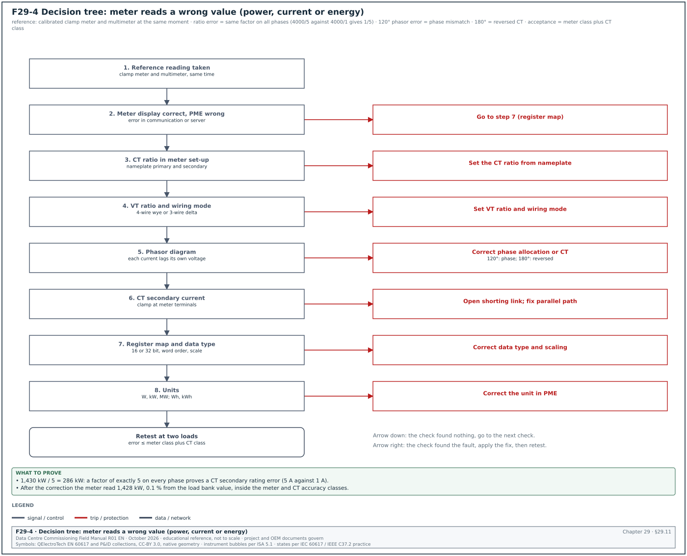
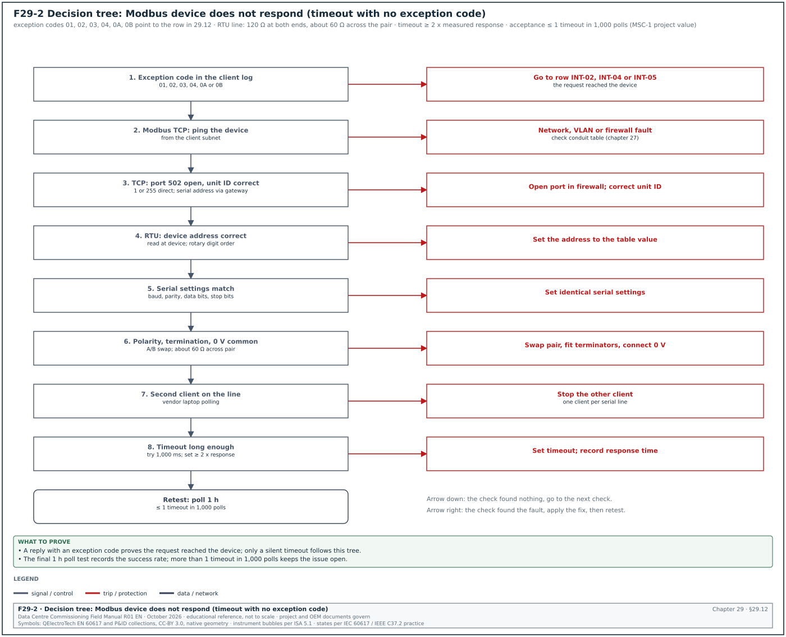
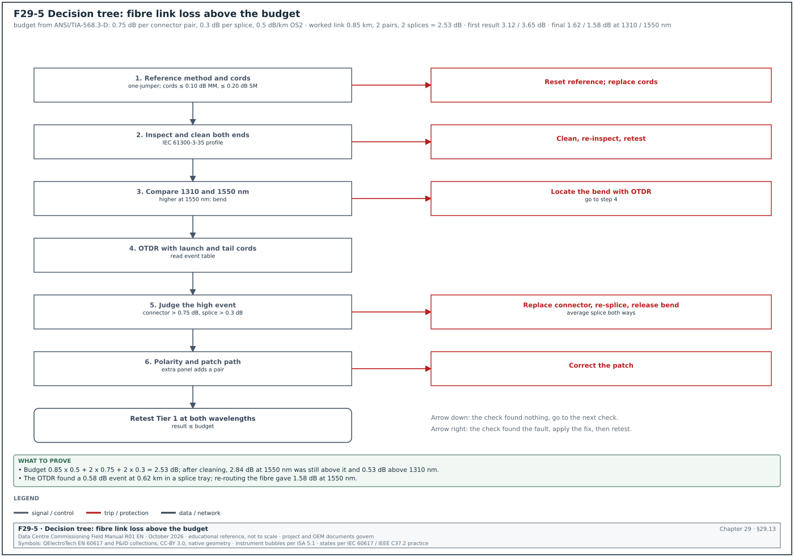

29.0Scope of this chapter
This chapter is a reference list of the issues that commissioning teams find on data-centre projects, from the first energisation to the integrated systems test (IST) and handover. Each issue gives six items: the symptom that the team sees, the likely causes (most frequent first) and the checks in the order to make them. The other three items are the fix, the prevention for the next building and the role that owns the fix. The commissioning manager uses this chapter to diagnose an issue on site and to write the "common errors" lines of a test script. He also uses it to check that a contractor's root cause analysis has considered the usual causes.
- Method. How to use the library, the issue categories and the issue record fields.
- Distribution. How the issues spread across disciplines, with the counts of this library.
- Electrical medium voltage (MV) and low voltage (LV). Switchgear, transformers, cables, breakers, relays and busway.
- Generators. Starting, loading, fuel and synchronising, with a decision tree for a failed synchronisation.
- Uninterruptible power supply (UPS) and batteries. Modules, static bypass, batteries and battery monitoring.
- Chilled-water plant. Chillers, pumps, dry coolers, towers, valves and water quality.
- Air side. Computer room air handlers (CRAH), fan walls, containment and humidity.
- CDU and liquid cooling. Coolant distribution units (CDU), technology cooling system (TCS) loops and leak detection, with a decision tree for low CDU flow.
- Fire. Detection, aspirating smoke detection, suppression and the cause-and-effect matrix.
- Building management system (BMS). Controllers, BACnet networks, graphics, trends and alarms, with a decision tree for a BACnet device offline.
- Electrical power monitoring system (EPMS) and PME. Meters, current transformers (CT), voltage transformers (VT), time synchronisation and Power Monitoring Expert (PME), with a decision tree for a meter that reads a wrong value.
- Integration. Modbus, BACnet and gateway interfaces between systems, with a decision tree for a Modbus device that does not respond.
- Network and fibre. Switches, rings, fibre and copper links, with a decision tree for high fibre link loss.
- Documentation and administration. Drawings, submittals, test records, asset data and handover documents.
- Contractor and process. Planning, permits, witness tests, staffing and change control.
Documents and sources used: the acceptance values of chapters 13 to 28 of this manual (which carry their own sources), the Uptime Institute Annual Outage Analysis 2025 and ANSI/NETA Acceptance Testing Specifications (ATS) (current edition). The chapter also uses the Modbus Application Protocol specification exception codes as published in Schneider Electric FAQ FA386843, the Chipkin and AAON BACnet master-slave/token-passing (MS/TP) troubleshooting guides and the ABB RS-485 troubleshooting guide. Further sources are Schneider Electric Data Center Expert help, the Xtralis very early smoke detection apparatus (VESDA) VLF-500 product information and ANSI/TIA-568.3-D loss values (ANSI/TIA-568.3-E is the current edition). The fibre guides come from Fluke Networks and EXFO, and the synchronising guidance from Schweitzer Engineering Laboratories (SEL) and the Electrical Engineering Portal. Where a cause or a value comes from field practice without a published source, the text names the original equipment manufacturer (OEM) manual or the project document that holds the value.
29.1How to use the issue library
29.1.1Method for any issue
- Write the symptom exactly. Write what was seen, with the tag, the value and the time: "B2-DH3-CDU-04 TCS flow 11.2 L/s against set point 14.5 L/s at 10:20". A symptom without a tag and a number cannot be compared with the library.
- Make the system safe. If the symptom affects live equipment or IT load, the shift lead applies the operating procedure first. Diagnosis starts after the system is in a safe state.
- Find the library rows. Look up the discipline table and the symptom. Several rows can match one symptom.
- Check in the listed order. The checks are ordered so that the fast and non-intrusive checks come first. Do not open a panel or isolate equipment before the remote checks are done.
- Record each check. Write each check and its result in the issue record, including checks that found nothing. A check that is not recorded will be repeated by the next shift.
- Fix the cause. Fix the cause that the checks proved. Resetting an alarm is a temporary action, and the issue stays open until the cause is fixed and the test is repeated.
- Repeat the failed test. The issue closes when the failed test step passes again, witnessed by the same party that witnessed the failure.
- Record the prevention. Add the prevention line to the lessons-learned log so that the next building or hall uses it.
29.1.2Issue categories
The categories below are the ones used in section 09.8.2. The ageing limits are the values of the MSC-1 worked example.
| Category | Meaning | Example | Ageing limit |
|---|---|---|---|
| A | safety risk, or risk to live IT load, or blocks the next commissioning level | fire release relay wired so that a broken wire keeps doors locked | 1 working day to a safe state and a plan |
| B | function or performance below specification; does not block the next level | CRAH fan speed oscillates ±15 % at part load | 7 working days |
| C | minor defect, label, document or cosmetic | label text differs from the drawing tag | 30 working days |
29.1.3Issue record fields
| Field | Type | Example value |
|---|---|---|
| Issue ID | text | ISS-B2-4217 |
| System and tag | text | CDU, B2-DH3-CDU-04 |
| Library row | text | CDU-03 |
| Symptom | text | TCS flow 11.2 L/s against 14.5 L/s set point |
| Found during | list | L4 functional test, script CDU-L4-04 step 12 |
| Category | list | B |
| Checks made (in order) | text | 1) clamp-on meter 11.4 L/s 2) strainer differential pressure (dP) 38 kPa against 12 kPa clean (limit: clean value + 20 kPa) |
| Proven cause | text | strainer blocked with installation debris |
| Fix | text | strainer cleaned, loop flushed through bypass for 4 h |
| Retest result | text | flow 14.7 L/s, pass |
| Owner | text | mechanical contractor |
| Raised and closed dates | date | 2026-11-12, 2026-11-14 |
29.1.4How the tables are written
Each discipline section has one or two tables. The columns are the same in every table.
- Issue and symptom. The row ID (for example ELV-07) and what the team sees.
- Likely causes, in order. The causes numbered 1), 2), 3) from the most frequent on data-centre projects to the least frequent.
- Checks, in order. The checks numbered in the order to make them.
- Fix. The fix for the most frequent proven cause.
- Prevention. The action at design, factory test or installation that prevents the issue next time.
- Owner. The role that owns the fix: the contractor or vendor named by system, the designer, or the commissioning authority (CxA).
29.2Distribution of issues by discipline
Figure F29-1 shows how the issues of this library spread across the 13 disciplines. The counts are the number of rows in each table of this chapter. The controls and integration disciplines (BMS, EPMS, integration and network) hold 41 of the 130 rows. Give these disciplines the most review time when you review scripts and method statements.


| Discipline | Rows in this library | Section |
|---|---|---|
| Electrical MV and LV | 12 | 29.3 |
| Generators | 11 | 29.4 |
| UPS and batteries | 11 | 29.5 |
| Chilled-water plant | 11 | 29.6 |
| Air side | 9 | 29.7 |
| CDU and liquid cooling | 10 | 29.8 |
| Fire | 9 | 29.9 |
| BMS | 11 | 29.10 |
| EPMS and PME | 11 | 29.11 |
| Integration | 9 | 29.12 |
| Network and fibre | 10 | 29.13 |
| Documentation and administration | 8 | 29.14 |
| Contractor and process | 8 | 29.15 |
| Total | 130 |
The Uptime Institute Annual Outage Analysis 2025 reports that power remains the most common cause of impactful outages in operating data centres, at 54 % of impactful outages. The most cited power causes are UPS failure (42 % of respondents), transfer switch failure (36 %) and generator failure (28 %). A respondent could name more than one cause (Uptime Institute Annual Outage Analysis 2025, as reported by Network World on 7 May 2025). It also reports that failures to follow procedures rose by 10 percentage points compared with the previous year. This library covers procedure and process issues and equipment faults.
29.3Electrical MV and LV issues
The acceptance values in this table are the values of chapters 13 and 14. ANSI/NETA ATS gives insulation resistance values in Table 100.1 where the manufacturer gives none. It treats contact resistance as a comparison: a value more than 50 % above the lowest value of similar connections is investigated.
| Issue and symptom | Likely causes, in order | Checks, in order | Fix | Prevention | Owner |
|---|---|---|---|---|---|
| ELV-01 Low insulation resistance on a 20 kV cable (below the specified value, or polarisation index below 1.0) | 1) moisture in the termination 2) termination stress cone damaged or dirty 3) cable sheath damage during pulling | 1) clean and dry terminations, retest 2) test each phase with the far end lifted 3) sheath test (10 kV DC on outer sheath) | re-terminate; repair sheath; retest before the very low frequency (VLF) test | cable end caps until termination; sheath test after pulling | electrical contractor |
| ELV-02 Partial discharge (PD) above the limit during VLF test on a cable | 1) poor termination workmanship 2) joint defect 3) damaged insulation | 1) locate by PD mapping (time of flight) 2) compare phases 3) inspect the located termination or joint | rebuild the termination or joint; retest VLF with PD | jointer certification check; termination witness at L2 | electrical contractor, cable jointer |
| ELV-03 Transformer turns ratio outside ±0.5 % of nameplate | 1) tap changer not on the stated tap 2) test leads on wrong terminals 3) winding fault | 1) read tap position 2) recheck connection to the vector group 3) test all taps | set correct tap; if the winding is faulty, return to OEM | record tap position on the test sheet before the test | electrical contractor, transformer OEM |
| ELV-04 Breaker contact resistance high on one pole (more than 50 % above the lowest similar pole) | 1) contamination or poor contact pressure 2) loose primary connection in the test path 3) test current too low for a stable reading | 1) repeat at 100 A DC with leads on the same points 2) operate breaker 5 times and retest 3) inspect the contacts | clean contacts or replace the pole per OEM | test at the OEM current; photograph test points | electrical contractor, switchgear OEM |
| ELV-05 Protection relay trips at a different time than the setting sheet | 1) setting file not the approved revision 2) CT ratio entered wrong in relay 3) curve type wrong (IEC and IEEE curves mixed) | 1) export relay settings and compare with the approved sheet 2) check CT ratio parameter 3) repeat secondary injection at 2 and 5 times pickup | load approved settings; retest | settings loaded from controlled file; checksum recorded | protection engineer |
| ELV-06 Breaker fails to close remotely from the EPMS or the supervisory control and data acquisition (SCADA) system | 1) remote or local selector in local 2) close permissive missing (spring not charged, interlock open) 3) wrong control voltage or wiring | 1) read status points in EPMS 2) check spring charged indication and interlocks at the panel 3) measure control voltage | correct permissive or wiring; test 3 operations | include permissive status points in the points list | electrical contractor, EPMS contractor |
| ELV-07 Busway joint temperature high on thermal scan under load bank | 1) joint bolt not torqued 2) joint misaligned 3) damaged joint pack | 1) compare with other joints at the same current (a rise above similar joints) 2) check torque indicator 3) open and inspect after isolation | re-torque or replace joint pack; rescan | torque marks witnessed at installation; infrared scan at L3 | electrical contractor, busway OEM |
| ELV-08 Phase rotation wrong at a switchboard or automatic transfer switch (ATS) | 1) cable phases crossed at one termination 2) drawing error 3) generator connected in the wrong order | 1) phase rotation meter at each source 2) trace the cable from the source 3) compare with drawing | correct the termination; retest rotation on all sources | phase colour checks at termination; rotation test before first transfer | electrical contractor |
| ELV-09 Earth fault relay operates on energisation with no fault | 1) neutral earthed at two points (4-pole and 3-pole mixing) 2) CT polarity wrong on residual connection 3) setting too sensitive for inrush | 1) check the neutral earthing points against the earthing design 2) polarity test of the CTs 3) review the setting | remove the second neutral-earth link; correct polarity | earthing arrangement review in design; neutral-earth link checks at L2 | electrical contractor, designer |
| ELV-10 Voltage at LV board 3 to 4 % below nominal at no load | 1) transformer on the wrong tap 2) utility voltage low 3) meter VT scaling wrong | 1) measure with a calibrated meter 2) read the incoming MV voltage 3) check tap position | change tap after isolation | tap setting in the energisation programme | electrical contractor |
| ELV-11 Transfer switch transfers but does not return to normal source | 1) retransfer timer set long or retransfer set to manual 2) normal source voltage sensing setting too tight 3) controller fault | 1) read controller settings 2) compare measured voltage with the pickup setting 3) check the event log | correct settings per sequence of operation | settings sheet witnessed at L3 | electrical contractor, ATS OEM |
| ELV-12 Arc flash labels missing or wrong after settings change | 1) study not updated after setting change 2) labels printed from draft study 3) equipment added | 1) compare label values with the latest study 2) check study revision against relay settings 3) site walk | reissue study and labels | study revision linked to settings revision | electrical designer |
Worked example: Contact resistance on switchboard B2-LV-A1 breakers. The tester measures the three poles of incomer air circuit breaker (ACB) B2-LV-A1-Q01 at 100 A DC: L1 18 µΩ, L2 19 µΩ, L3 31 µΩ. The lowest similar value is 18 µΩ; 50 % above it is 27 µΩ, so L3 at 31 µΩ is investigated (row ELV-04). Check 1 repeats the test with the leads moved to clean points: L3 reads 30 µΩ. Check 2 operates the breaker 5 times: L3 reads 29 µΩ. Check 3, after isolation and OEM inspection, finds contamination on the L3 main contact. After cleaning per the OEM procedure, L3 reads 19 µΩ. The issue closes with the retest record and the OEM service report.
29.4Generator issues


29.4.1Generator issue table
| Issue and symptom | Likely causes, in order | Checks, in order | Fix | Prevention | Owner |
|---|---|---|---|---|---|
| GEN-01 Generator fails to start (crank, no start) | 1) fuel not reaching the engine (valve closed, air in fuel line, day tank low) 2) starting battery voltage drops during crank 3) controller start inhibit active | 1) read controller alarm 2) check day tank level and fuel valves 3) measure battery voltage during crank 4) bleed fuel system | open valves; bleed; replace battery | fuel system prime check in L2; battery load test | generator contractor |
| GEN-02 Generator starts but takes longer than the specified time to reach rated voltage and frequency (for example above 10 s) | 1) jacket water heater off, engine below the stated temperature 2) governor ramp setting 3) fuel restriction | 1) read engine temperature before start 2) read controller ramp settings 3) check fuel filter differential | restore heater supply; correct settings | heater supply on essential board; start time test at L3 | generator contractor |
| GEN-03 Voltage dip or frequency dip above the ISO 8528-5 class on a load step | 1) load step larger than the engine can accept 2) automatic voltage regulator (AVR) or governor gains not tuned 3) load bank step wrong | 1) compare step size with the OEM load acceptance curve 2) record AVR and governor response 3) check the load bank step value | split the step; tune gains | load step plan from the OEM curve in the script | generator contractor, OEM |
| GEN-04 Generator fails to synchronise to the bus (breaker never closes) | see the decision tree in 29.4.2 | see 29.4.2 | see 29.4.2 | sync check settings witnessed in factory test | generator contractor, protection engineer |
| GEN-05 Reverse power trip after synchronising | 1) generator closed with frequency lower than the bus 2) load sharing not active 3) governor droop or isochronous settings mismatched | 1) read slip at the close event 2) check load sharing lines or communication 3) compare governor modes on all sets | set slip window so the incoming set is slightly faster; fix load sharing | load sharing test with 2 sets before the full bus test | generator contractor |
| GEN-06 Unequal kW sharing between paralleled sets (more than ±5 % of rating, project value) | 1) load sharing communication fault 2) different governor settings 3) one set fuel limited | 1) compare kW per set on the controllers 2) check the load sharing network status 3) compare settings files | correct settings or communication | settings file control for all sets | generator contractor |
| GEN-07 Unequal kVAr sharing and circulating current | 1) AVR droop or VAr sharing settings differ 2) CT for reactive droop wrong polarity 3) one AVR faulty | 1) compare kVAr and power factor per set 2) check droop CT polarity 3) read AVR settings | correct polarity or settings | AVR settings witnessed in factory test | generator contractor |
| GEN-08 Day tank does not refill, low fuel alarm | 1) transfer pump not running (control or power) 2) bulk tank valve closed or filter blocked 3) level switch fault | 1) check pump status and alarms 2) check valves and filter dP 3) test level switches by hand | correct the control or replace the switch | fuel system functional test at L3 with real fuel | mechanical contractor (fuel) |
| GEN-09 Fuel contamination found (water or microbial growth) | 1) water ingress at fill point or vent 2) old fuel delivered 3) no fuel polishing | 1) sample from tank bottom 2) laboratory test 3) inspect fill and vent caps | polish or replace fuel; drain water | fuel test at delivery; polishing system in commissioning scope | fuel supplier, mechanical contractor |
| GEN-10 High coolant temperature alarm during the load bank test | 1) radiator air flow blocked or air recirculating 2) coolant level low or air in system 3) ambient higher than design | 1) measure air on and off the radiator 2) check coolant level and bleed 3) compare with design ambient | remove blockage; bleed; add baffle | air path review in design; full-load test at L3 | generator contractor |
| GEN-11 Generator breaker trips on overcurrent during a block load | 1) protection setting below the inrush of the load 2) load step larger than planned 3) CT ratio wrong | 1) read trip record 2) compare with the coordination study 3) check CT ratio parameter | correct setting per study | coordination study includes generator source | protection engineer |
29.4.2Decision tree: generator fails to synchronise
Figure F29-7 shows the decision tree. A synchronising check relay (ANSI device 25) or the synchroniser in the generator controller compares the voltage magnitude, the slip frequency and the phase angle across the open breaker. It allows the close only when all three are inside the window. Typical windows are a phase angle within about ±10°, a slip of about 0.1 to 0.2 Hz or less, and a voltage difference of 2 to 5 %. The project values are the ones in the approved relay and generator controller settings sheet. The checks below start with the most frequent cause.
- Read the controller message. The generator controller shows which value is outside the window: voltage, frequency or angle. Record the three values at the moment of the failed attempt.
- Check the phase rotation. Measure the phase rotation on the generator side and the bus side with a phase rotation meter. If the rotations differ, the set can never synchronise. Stop and correct the cable termination (row ELV-08).
- Check the VT wiring. Measure the voltage on the synchroniser inputs from the generator VT and the bus VT. A swapped phase or a wrong VT ratio shows as a constant angle error, for example 120° or 30°.
- Check the frequency source. Some controllers calculate the generator frequency from engine speed instead of the VT signal. A wrong number of teeth or pole setting then gives a false slip. Compare the controller frequency with a handheld meter on the VT.
- Check the slip window and the governor. If the slip window is narrower than the governor can hold, the angle passes through zero too fast or never settles. Record the slip trend; widen the window only within the protection engineer's approved limit, or tune the governor.
- Check the voltage match. If the voltage difference is outside the window, check the AVR set point and the voltage matching function of the controller.
- Check the breaker close time. The synchroniser sends the close command early by the breaker close time. A wrong close time setting gives a close at the wrong angle and a large current transient. Measure the breaker close time with a timing test and enter it.
- Check the dead bus logic. If the bus is dead, the first set closes by dead bus logic. If the dead bus permissive is wrong, no set closes. Check the bus voltage threshold setting.
- Retest. Repeat the synchronisation 5 times. Record slip, angle and voltage difference at each close.
Worked example: Generator B2-GEN-07 fails to synchronise to the 20 kV generator bus during L4. The controller shows "angle out of window" and a steady angle difference of about 30° while slip is near 0 Hz. Step 2 shows the same rotation on both sides. Step 3 shows the bus VT of B2-GEN-07 connected line-to-neutral while the generator VT is connected line-to-line, which gives a fixed 30° phase shift. The VT secondary connection is corrected to match the drawing and the synchroniser setting. Five closes follow with angles between 2° and 6° and slip between 0.05 and 0.11 Hz. The issue closes with the five close records attached.
29.5UPS and battery issues
| Issue and symptom | Likely causes, in order | Checks, in order | Fix | Prevention | Owner |
|---|---|---|---|---|---|
| UPS-01 UPS transfers to static bypass on a load step during the load bank test | 1) load step above the inverter overload limit for the set time 2) module count lower than planned (a module in standby or failed) 3) wrong load bank step | 1) read the UPS event log with time stamps 2) check the number of modules online 3) compare the step with the UPS overload curve | correct module configuration; repeat the step | step plan from the UPS overload table in the script | UPS OEM |
| UPS-02 UPS refuses to transfer back from bypass to inverter | 1) bypass source out of tolerance (voltage or frequency) 2) inverter not synchronised to bypass 3) retransfer counter limit reached | 1) read bypass voltage and frequency 2) read the synchronisation status 3) read the retransfer counter | correct the source; reset counter per OEM | bypass tolerance settings agreed with generator performance | UPS OEM |
| UPS-03 UPS does not synchronise to the generator supply, stays unsynchronised | 1) generator frequency outside the UPS sync window (for example ±0.5 Hz) 2) frequency slew rate setting too low 3) generator frequency unstable | 1) record generator frequency trend 2) read UPS sync window and slew rate 3) compare with ISO 8528-5 class of the set | widen the window within OEM limits or tune the governor | joint UPS and generator test at L4 with real sets | UPS OEM, generator contractor |
| UPS-04 Battery autonomy below the design (for example 3.8 min against 5 min) | 1) battery not fully charged before the test 2) one or more weak cells or modules 3) load higher than the stated test load | 1) check charge time and float current before the test 2) review the per-cell voltages at the end of the test 3) check the test load | recharge 24 h and retest; replace weak cells | test only after the OEM charge time; record float current | UPS OEM, battery supplier |
| UPS-05 One battery string current differs from the others during discharge by more than 10 % (project value) | 1) loose or high-resistance connection 2) string fuse or breaker contact resistance 3) weak cells | 1) thermal scan during discharge 2) measure connection resistance (micro-ohm) 3) compare cell voltages | re-torque or replace connection | torque marks and connection resistance at installation | battery installer |
| UPS-06 Battery monitoring shows a cell with high internal resistance (above 20 to 30 % of the string average, confirm against IEEE 1188 and the OEM) | 1) faulty cell 2) bad sensor lead connection 3) measurement during charge transient | 1) repeat at float 2) check sensor lead 3) handheld impedance test | replace cell; repair lead | baseline impedance at installation | battery supplier |
| UPS-07 Lithium-ion battery cabinet alarm "BMS communication lost" | 1) battery management system (BMS of the battery) network cable or terminator 2) address conflict 3) firmware mismatch between racks | 1) check the cabinet communication bus 2) list addresses 3) compare firmware versions | correct wiring or address; align firmware | firmware list in the approved version list | battery OEM |
| UPS-08 UPS output voltage unbalance or total harmonic distortion (THD) above the specification on non-linear load | 1) load bank is linear, test does not represent IT load 2) inverter tuning 3) measurement on the wrong point | 1) check the load bank type 2) measure with a class A power quality analyser at the output 3) compare with IEC 62040-3 values | correct the test set-up; OEM tuning if real | use the IEC 62040-3 reference non-linear load where specified | UPS OEM, CxA |
| UPS-09 Static bypass switch overheating alarm | 1) cooling fan failure 2) air filter blocked by construction dust 3) room temperature high | 1) check fans 2) check filter 3) measure room temperature | replace fan or filter | construction dust control; filters changed before L4 | UPS OEM |
| UPS-10 UPS alarms do not reach the BMS or EPMS | 1) network card not configured or wrong Simple Network Management Protocol (SNMP) or Modbus map 2) firewall rule missing 3) point mapping in the receiving system wrong | 1) read alarms on the UPS display and the card web page 2) poll the card from the server 3) compare register map | correct the map or rule | interface tested at L3 with the receiving system | UPS OEM, EPMS contractor |
| UPS-11 Maintenance bypass interlock allows a wrong switching sequence | 1) key interlock keys duplicated or wrong 2) electrical interlock wiring missing 3) procedure differs from the design | 1) try each wrong sequence with the keys 2) check interlock wiring 3) compare the operating procedure with the design | correct the interlock; remove duplicate keys | key interlock schedule checked at L2 | electrical contractor |
Worked example: Battery autonomy test of B2-UPS-A1 (row UPS-04). The design autonomy is 5 min at 2.5 MW in the MSC-1 worked example. The first test at 2.5 MW load bank ends at 3 min 48 s when the battery reaches the end voltage. Check 1 shows the battery was charged for 9 h after an earlier test; the OEM requires 24 h. Check 2 shows two cells in string 2 reached the end voltage first. The battery is recharged for 24 h and the test repeated: autonomy 5 min 12 s, and the two cells still end 0.08 V below the string average. The UPS OEM replaces the two cells under warranty and the third test gives 5 min 16 s with all cells inside the OEM band.
29.6Chilled-water plant issues
| Issue and symptom | Likely causes, in order | Checks, in order | Fix | Prevention | Owner |
|---|---|---|---|---|---|
| CHW-01 Chiller trips on low evaporator pressure or low refrigerant temperature | 1) low chilled-water flow (valve closed, strainer blocked) 2) low refrigerant charge 3) set point below the design | 1) read evaporator flow and dP 2) check isolation valves and strainer 3) check refrigerant pressures with the OEM | restore flow; OEM charge check | flow proving test before first start | mechanical contractor, chiller OEM |
| CHW-02 Chiller trips on high condenser pressure | 1) condenser water or dry cooler flow low 2) condenser fouled 3) non-condensable gas in the system | 1) read condenser flow and leaving temperature 2) compare approach with OEM data 3) OEM purge check | restore flow; clean | flushing before connection | mechanical contractor, chiller OEM |
| CHW-03 Centrifugal chiller surge (noise, current swings) at low load and high lift | 1) condenser water temperature too high for the load 2) flow control unstable 3) head pressure control setting | 1) trend lift and load 2) check condenser temperature control 3) OEM review of surge settings | lower condenser temperature or adjust controls | low-load test in L4 script | chiller OEM |
| CHW-04 Chilled-water supply temperature hunts ±1 K around set point | 1) control loop tuning 2) chiller staging too fast 3) sensor in a poor location (stratification) | 1) trend supply temperature and chiller load 2) review staging timers 3) compare sensor with a reference thermometer | tune loop; adjust timers | sensor locations reviewed in design | BMS contractor, chiller OEM |
| CHW-05 Pump flow below design at full speed | 1) strainer blocked 2) valve partly closed or balancing valve set wrong 3) air in the system 4) impeller rotation reversed | 1) strainer dP 2) valve positions 3) vent air 4) check rotation | clean; reset valves; correct rotation | rotation check at first run; strainer cleaning schedule after flushing | mechanical contractor |
| CHW-06 Pump cavitation noise | 1) suction pressure low (expansion vessel pre-charge wrong, system pressure low) 2) suction strainer blocked 3) high water temperature | 1) measure suction pressure against the net positive suction head (NPSH) required 2) check vessel pre-charge 3) strainer dP | correct system pressure | pressurisation set-up witnessed | mechanical contractor |
| CHW-07 Differential pressure control unstable; pumps hunt | 1) dP sensor in the wrong place 2) loop tuning too aggressive 3) several valves closing at the same time | 1) check sensor location 2) trend dP and pump speed 3) review valve sequence | relocate sensor or tune loop | sensor location on drawings checked | BMS contractor |
| CHW-08 Water treatment readings out of range after flushing (conductivity, iron, bacteria) | 1) flushing incomplete 2) dosing not started 3) make-up water quality | 1) laboratory test 2) check dosing records 3) test make-up water | continue flushing; correct dosing | flushing plan with acceptance values | water treatment specialist |
| CHW-09 Dry cooler leaving temperature above design at design ambient | 1) fans not all running 2) coil fouled or air recirculation 3) adiabatic spray not working | 1) fan status 2) measure air on coil temperature 3) spray test | repair fans; baffle; repair spray | air recirculation check in design | mechanical contractor |
| CHW-10 Chiller does not restart within the stated time after a power interruption | 1) restart timer set long 2) controls not on UPS 3) chiller "rapid restart" option not enabled | 1) read controller settings 2) check control power source 3) OEM option list | enable option; fix power | rapid restart in specification and factory test | chiller OEM |
| CHW-11 Valve position feedback differs from command by more than 5 % | 1) actuator stroke not calibrated 2) wrong signal range (0–10 V against 2–10 V) 3) mechanical linkage slip | 1) stroke test at 0, 50, 100 % 2) check signal configuration 3) inspect linkage | calibrate actuator | stroke test at L2 point-to-point | BMS contractor |
Figure F29-8 shows the order of checks for a chiller that trips on low evaporator pressure or low flow (rows CHW-01 and CHW-05). The water side is checked first, and the chiller OEM checks the refrigerant charge only after the flow is proven. The design evaporator flow of a 2.5 MW cold-loop chiller at 18 / 24 °C (example value, section 03.9.3) is 2,500 kW / (4.19 kJ/kg K × 6 K) = 99.4 L/s.


Worked example: Chiller B2-CHW-CH-03 trips on low evaporator pressure 4 min after its first start. The BMS trend shows an evaporator flow of 64 L/s, which is 64 % of the design flow. All isolation valves are open and the balancing valve is at its test and balance (TAB) setting. The strainer differential pressure is 46 kPa against 14 kPa recorded when the strainer was clean, so the strainer is blocked with flushing debris. The mechanical contractor cleans the strainer and the flow rises to 101 L/s. The chiller then runs for 4 h at 50 % and 100 % load without a trip, and the issue closes with the trend file attached.
29.7Air-side issues
| Issue and symptom | Likely causes, in order | Checks, in order | Fix | Prevention | Owner |
|---|---|---|---|---|---|
| AIR-01 Rack inlet temperature above 27 °C in some cabinets while CRAH supply is at set point | 1) hot air recirculation: missing blanking panels or containment gaps 2) floor or ceiling openings 3) uneven heater load bank placement | 1) thermal camera on the cabinet fronts 2) check blanking panels and doors 3) check load bank positions | close gaps; fit blanking panels | containment inspection before heat load test | IT installer, mechanical contractor |
| AIR-02 CRAH fan speed oscillates (more than ±10 % at steady load) | 1) differential pressure control loop tuning 2) dP sensor location in turbulent air 3) several CRAHs fight on the same control signal | 1) trend fan speed and dP 2) check sensor location 3) check team or group control | tune loop; use common control | control tuning at L4 with load | BMS contractor, CRAH OEM |
| AIR-03 Fan wall does not reach design air flow | 1) filters blocked by construction dust 2) fan speed limit set low 3) obstruction in air path | 1) filter dP 2) fan speed setting 3) walk the air path | replace filters; correct limit | replace filters before testing | mechanical contractor |
| AIR-04 Room humidity outside the design range (dew point limit) | 1) outdoor air system not controlling 2) dehumidification not running 3) sensor calibration | 1) compare sensor with reference 2) check outdoor air unit 3) trend dew point | calibrate or repair | humidity sensor calibration at L2 | mechanical contractor |
| AIR-05 CRAH valve opens 100 % but supply air stays above set point | 1) chilled-water supply temperature high 2) coil air side fouled or bypass 3) low water flow (balancing valve) | 1) measure water temperatures and flow 2) check coil 3) check balancing | correct flow or supply temperature | balancing report before L4 | mechanical contractor |
| AIR-06 Condensation on chilled-water pipes in the hall | 1) insulation gaps 2) supply temperature below room dew point 3) humidity high during construction | 1) inspect insulation 2) compare temperatures 3) measure dew point | repair insulation | insulation inspection before ceilings close | mechanical contractor |
| AIR-07 Containment doors do not open on fire alarm | 1) door release not wired to fire panel 2) magnetic holder power not cut 3) cause-and-effect line missing | 1) check cause-and-effect matrix 2) test relay 3) check wiring | wire release; update matrix | include in fire L4 script | fire contractor |
| AIR-08 CRAH unit does not restart after a power interruption | 1) auto restart disabled 2) control power not on UPS 3) restart staggering delay long | 1) check settings 2) check control power 3) check delays | enable and set delays | restart test in IST | CRAH OEM, BMS contractor |
| AIR-09 Supply air temperature sensors read 1.5 to 2 K apart on the same unit | 1) sensor placed in stratified air 2) calibration 3) wiring resistance on a resistance temperature detector (RTD) | 1) reference thermometer at each sensor 2) check wiring and sensor type setting 3) move sensor | recalibrate or move | sensor location check at L2 | BMS contractor |
29.8CDU and liquid cooling issues


29.8.1CDU issue table
| Issue and symptom | Likely causes, in order | Checks, in order | Fix | Prevention | Owner |
|---|---|---|---|---|---|
| CDU-01 Secondary (TCS) flow below set point | see the decision tree in 29.8.2 | see 29.8.2 | see 29.8.2 | flushing to cleanliness value before connecting cold plates | mechanical contractor, CDU OEM |
| CDU-02 TCS supply temperature above set point at design load | 1) facility water (FWS) supply temperature high 2) FWS flow low 3) heat exchanger fouled | 1) read FWS temperatures and flow 2) compare approach with the CDU data sheet 3) check strainers | restore FWS; clean | FWS balancing before CDU load test | mechanical contractor |
| CDU-03 CDU pump changeover causes a flow dip and a high temperature alarm | 1) changeover not overlapped (standby starts after duty stops) 2) check valve sticking 3) pump speed ramp too slow | 1) trend flow at 1 s during changeover 2) check valve operation 3) read ramp settings | set overlap; repair check valve | changeover test at L4 with trend at 1 s | CDU OEM |
| CDU-04 Leak detection alarm with no visible leak | 1) condensation on sensor cable 2) cable contaminated with cleaning fluid 3) cable damaged | 1) inspect the location from the alarm distance 2) dry and clean cable 3) resistance test of cable | clean or replace cable section | protect cables during construction | mechanical contractor, leak detection vendor |
| CDU-05 Coolant pH, conductivity or glycol concentration out of range | 1) coolant mixed with flushing water 2) wrong coolant supplied 3) contamination from cold plates or hoses | 1) laboratory sample 2) check delivery note 3) sample at different points | drain and refill | coolant sample at each fill; record batch | CDU OEM, coolant supplier |
| CDU-06 Air in TCS loop: flow noise and unstable pressure | 1) air not vented after filling 2) automatic air vents closed 3) low system pressure | 1) vent at high points 2) check air vents 3) check pressure against fill pressure | vent; correct pressure | venting plan in filling procedure | mechanical contractor |
| CDU-07 Rack manifold flow uneven between racks (more than ±10 % of design per rack, project value) | 1) quick disconnect partly engaged 2) rack balancing valve setting 3) blocked cold plate | 1) measure flow per rack 2) check couplings 3) check valve settings | engage couplings; balance | flow measurement per rack in L4 | IT installer, mechanical contractor |
| CDU-08 CDU does not respond to BMS set point change | 1) CDU in local control mode 2) BMS writes to the wrong register or wrong data type 3) write priority conflict | 1) check mode 2) compare register map 3) read priority array | correct mode or map | interface test at L3 | BMS contractor, CDU OEM |
| CDU-09 CDU pressure relief valve weeps during operation | 1) system pressure too high (fill pressure or expansion vessel) 2) valve seat debris 3) valve set point wrong | 1) compare pressure with design 2) inspect valve 3) check set point | correct pressure; replace valve | expansion vessel set-up witnessed | mechanical contractor |
| CDU-10 CDU filter differential pressure rises fast after first load | 1) debris from installation 2) filter mesh finer than design 3) corrosion products | 1) inspect filter contents 2) check mesh size 3) water sample | clean filter; flush | flushing to particle count acceptance | mechanical contractor |
29.8.2Decision tree: CDU low flow
Figure F29-6 shows the decision tree. In the MSC-1 worked example each hall has 16 CDUs of 1.0 MW with TCS supply at 45 °C and return at 55 °C. The hall TCS flow is about 232 L/s for the 9.6 MW hall liquid load. Shared by 16 CDUs, this is about 14.5 L/s per CDU.
- Confirm the reading. Compare the CDU flow meter value with a clamp-on ultrasonic flow meter on a straight pipe section (accuracy about ±2 % when installed per the meter manual). If the two differ by more than 5 %, the issue is the flow meter (scaling, installation or air), and the loop is checked next.
- Check the pump state. Read the pump speed and current. A pump at full speed with low current points to air or a closed valve; a pump below full speed points to a speed limit or control issue.
- Check the strainer and filter. Read the differential pressure across the strainer and filter. A value above the clean value plus the OEM limit (for example 20 kPa above clean; the CDU OEM operation and maintenance manual gives the value) means debris.
- Check the valves. Walk the loop from the CDU to the rack manifolds and check each isolation valve is fully open and each balancing valve is at its set position.
- Check for air. Read the loop pressure against the fill pressure. Vent at the high points. Air shows as pressure swings and flow noise.
- Check the quick disconnects. At the racks, check each coupling is fully engaged. A partly engaged coupling restricts flow to one rack.
- Check the control. Read the flow or pressure set point and the control mode. A wrong set point or a pressure-control mode with a low pressure set point limits flow.
- Retest. Repeat the flow test at the design load and record the flow, supply and return temperatures.
Worked example: B2-DH3-CDU-04 shows 11.2 L/s against a set point of 14.5 L/s. Step 1: the clamp-on meter reads 11.4 L/s, so the reading is correct. Step 2: pump at 100 % speed, current normal. Step 3: strainer differential is 38 kPa against 12 kPa clean, so 26 kPa above clean and above the 20 kPa limit. The strainer basket holds pipe scale and polytetrafluoroethylene (PTFE) tape. After cleaning and a 4 h bypass flush, the flow is 14.7 L/s. The issue record lists the proven cause and the prevention: the contractor's flushing record for zone 4 showed only 2 hours of flushing against the 6 hours in the flushing plan.
29.9Fire issues
| Issue and symptom | Likely causes, in order | Checks, in order | Fix | Prevention | Owner |
|---|---|---|---|---|---|
| FIR-01 Aspirating smoke detector (ASD) low or high airflow fault | 1) pipe blocked, cap or tape left on a sampling hole 2) pipe joint not glued or broken (high flow) 3) aspirator speed setting or filter | 1) read flow per pipe on the detector 2) walk the pipe, check holes and caps 3) check the filter | remove blockage; repair joint | pipe network check against the design calculation at L2 | fire contractor |
| FIR-02 ASD transport time longer than the design calculation | 1) pipe layout differs from the calculation 2) hole sizes differ 3) aspirator setting | 1) smoke test at the last hole with timer 2) compare as-built with design 3) check aspirator | rebuild to design or recalculate | as-built pipe calculation submitted before test | fire contractor |
| FIR-03 ASD filter fault | 1) filter end of life or loaded with dust 2) filter not registered after replacement | 1) inspect filter 2) check the detector service menu | replace and register filter | change filters after construction dust phase | fire contractor |
| FIR-04 Fire alarm output does not operate the expected device (damper, door, air handling unit (AHU) stop) | 1) cause-and-effect line missing or wrong in the panel program 2) output module address wrong 3) field wiring | 1) compare program with the approved matrix 2) check module address 3) test the output with a meter | correct program or wiring | matrix review at L3 against the program export | fire contractor |
| FIR-05 Gas suppression system: room integrity test fails (hold time below 10 min, project value) | 1) unsealed penetrations (cable, pipe, duct) 2) dampers not closing 3) door seals | 1) door fan test with smoke pencil 2) check dampers 3) check doors | seal penetrations; retest | penetration sealing inspection before ceilings close | fire contractor, all trades |
| FIR-06 Fire panel shows earth fault | 1) cable insulation damage 2) shield earthed at both ends 3) moisture in field device | 1) panel earth fault location by loop 2) disconnect sections 3) insulation resistance test | repair cable | insulation resistance test of loops before connection | fire contractor |
| FIR-07 Pre-action valve does not open on double knock | 1) detection zone mapping wrong 2) valve release solenoid wiring 3) air supervisory pressure setting | 1) check matrix and zone 2) test solenoid 3) check pressures | correct | full trip test at L4 | fire contractor |
| FIR-08 Fire alarm signal to BMS shows the wrong zone | 1) interface mapping error 2) gateway register shift 3) BMS point name error | 1) activate one zone and read BMS 2) compare map 3) correct names | correct map | point-to-point of all zones | fire contractor, BMS contractor |
| FIR-09 Detector false alarms during commissioning | 1) construction dust 2) detector type unsuitable for the airflow 3) sensitivity set too high | 1) check location and dust 2) review detector type 3) review sensitivity | clean or replace detectors; adjust | detector covers during construction | fire contractor |
29.10BMS issues


29.10.1BMS issue table
| Issue and symptom | Likely causes, in order | Checks, in order | Fix | Prevention | Owner |
|---|---|---|---|---|---|
| BMS-01 BACnet device offline in the BMS | see the decision tree in 29.10.2 | see 29.10.2 | see 29.10.2 | device instance and media access control (MAC) address plan issued before installation | BMS contractor |
| BMS-02 Duplicate BACnet device instance: points jump between two devices | 1) device instance not changed from the default 2) controller copied from a template 3) instance plan not followed | 1) Who-Is scan and sort by instance 2) compare with the instance plan 3) check controller configuration | set unique instances | instance plan with ranges per building | BMS contractor |
| BMS-03 Points show correct values but alarms do not reach the operator workstation | 1) alarm notification class or recipient list missing 2) alarm limits not set 3) alarm suppressed by a commissioning mode | 1) read the intrinsic or algorithmic alarm settings 2) check the notification class recipients 3) check modes | configure alarms | alarm test of 100 % of alarms at L4 | BMS contractor |
| BMS-04 Trend logs have gaps | 1) trend buffer too small for the interval 2) server collection schedule fails 3) controller time not synchronised | 1) compare buffer size, interval and collection time 2) check server logs 3) check controller time | resize buffers; fix collection | trend set-up rules in the BMS specification | BMS contractor |
| BMS-05 Analogue input reads a fixed wrong value (for example −40 °C or 150 °C) | 1) sensor wiring open or short 2) wrong sensor type selected (NTC curve, PT1000 against PT100) 3) wrong input range | 1) measure sensor resistance 2) check input configuration 3) compare with a reference | correct wiring or configuration | point-to-point at L2 with reference values | BMS contractor |
| BMS-06 Output command written but equipment does not respond | 1) higher priority in the BACnet priority array holds the point (manual override at priority 8) 2) equipment in local or hand mode 3) wiring | 1) read the priority array 2) check the selector at the equipment 3) measure the output | release override; set to auto | override report checked daily during commissioning | BMS contractor |
| BMS-07 Graphics show the wrong equipment state | 1) graphic linked to the wrong point 2) state text inverted (0 and 1 swapped) 3) copied graphic not updated | 1) change state at the equipment and watch the graphic 2) check point binding 3) check state text | correct binding | graphic check in point-to-point | BMS contractor |
| BMS-08 Sequence of operation does not match the approved sequence (lead-lag rotation, staging) | 1) program written from an older revision 2) timers set by default 3) misunderstanding of the text | 1) compare program with the approved sequence line by line 2) read timers 3) run the sequence test | correct program; retest | sequence review at factory test with program printout | BMS contractor, designer |
| BMS-09 BMS server CPU high and screens slow | 1) too many change-of-value (COV) subscriptions or fast polling 2) trend collection overlap 3) server sizing | 1) read server performance counters 2) list polling rates 3) review subscription count | adjust rates and collection | performance test with full point count at L3 | BMS contractor |
| BMS-10 Controller program lost after power loss | 1) program not saved to non-volatile memory 2) backup battery flat 3) firmware defect | 1) check save status 2) check battery 3) check firmware release notes | save; replace battery; update firmware | power cycle test of each controller type | BMS contractor |
| BMS-11 BACnet broadcast storm: many devices slow or offline | 1) BACnet broadcast management device (BBMD) broadcast distribution tables create a loop 2) two BBMDs on the same subnet 3) foreign device registration errors | 1) capture traffic with a network analyser 2) check BBMD tables 3) check subnet plan | correct BBMD tables | BBMD design review | BMS contractor, network contractor |
29.10.2Decision tree: BACnet device offline
Figure F29-3 shows the decision tree. The BMS shows a device "offline" when it stops answering the server's requests. The cause can be in the device, in the MS/TP trunk, in the router that joins MS/TP to BACnet/IP, or in the IP network. The Chipkin and AAON MS/TP guides give the field rules used below. Use the same baud rate on the whole trunk and a Max Master value at least equal to the highest master MAC address. Fit 120 Ω termination at the two physical ends only, and give each device a unique MAC address on its trunk.
- Find the scope. Check whether one device, one trunk or one whole subnet is offline. One device points to the device or its address; one trunk points to the trunk or the router; a whole subnet points to the IP network or the BBMD.
- Check power and status LEDs. At the device, check the supply voltage and the status LED. A device without power is offline.
- For BACnet/IP, ping and Who-Is. Ping the IP address from the BMS server subnet. Send a Who-Is for the device instance with a BACnet tool. No ping response points to the network (virtual local area network (VLAN), cable, firewall). Ping response but no I-Am points to the BACnet configuration (port 47808, network number, device instance).
- For MS/TP, check the MAC and the instance. Read the MAC address and device instance at the device. A duplicate MAC on the trunk causes token loss and intermittent communication. A duplicate instance on the network makes points jump (row BMS-02).
- Check the baud rate. Read the baud rate of each device on the trunk. One device at a different baud rate can disturb the whole trunk. Set the baud rate by hand where the device allows it.
- Check Max Master. If the device MAC is above the Max Master value of the other devices, the device never gets the token. Set Max Master at least equal to the highest MAC on the trunk.
- Check termination and biasing. With the trunk de-energised, measure across the data pair: about 60 Ω with two 120 Ω terminators fitted. Check that termination is only at the two ends and that biasing is set at one point per the router manual.
- Check polarity and shield. Check that the + and − wires are not swapped at the device and that the shield is earthed at one point only.
- Read the error counters. Read the framing and cyclic redundancy check (CRC) error counters on the router or the device. High counts on one device point to noise or a baud mismatch on that device.
- Retest. After the fix, run the trunk for 24 h and check that the device stays online and the error counters stay low.
Worked example: Trunk B2-DH3-MSTP-02 has the 13 CRAH controllers of the hall. Devices with MAC 70 and 72 are offline; the other 11 are online. Step 4 shows both MAC addresses are unique. Step 6 shows Max Master on the router and on the other controllers is 64, which is the default value. Devices 70 and 72 are above 64, so they never receive the token. Max Master is set to 127 on all devices on the trunk. Both devices come online within 1 minute, and the 24 h run shows no offline events.
29.11EPMS and PME issues


29.11.1EPMS issue table
| Issue and symptom | Likely causes, in order | Checks, in order | Fix | Prevention | Owner |
|---|---|---|---|---|---|
| EPM-01 Meter reads a wrong value (power, current or energy) | see the decision tree in 29.11.2 | see 29.11.2 | see 29.11.2 | CT and VT ratio table in the points list; primary injection at L3 | EPMS contractor |
| EPM-02 Meter reads negative kW on a feeder that only takes power | 1) CT installed in reverse (P1 and P2 swapped) 2) CT secondary wires swapped at the meter 3) meter configured with "CT polarity inverted" | 1) check phase angle on the meter phasor screen 2) check CT orientation marks 3) read meter setup | correct CT orientation or software polarity per project rule | CT arrow direction checked at installation | EPMS contractor, electrical contractor |
| EPM-03 Power factor reads about 0.5 on a resistive load bank | 1) CT and VT phases mismatched (CT L1 on VT L2) 2) wrong wiring mode (3-wire against 4-wire) | 1) phasor screen: the current sits about 120° from its voltage (power factor reads −0.5; with the CT polarity reversed as well, 60° and +0.5) 2) check wiring mode setting | correct phase allocation | phasor check during load bank at L3 | EPMS contractor |
| EPM-04 Device shows "communication lost" in Power Monitoring Expert (PME) at intervals | 1) Modbus gateway timeout shorter than the device response 2) too many devices on one serial line 3) duplicate IP address | 1) read PME communication diagnostics 2) count devices per gateway 3) address resolution protocol (ARP) scan for duplicates | adjust timeout; split the line | serial line loading rules in design | EPMS contractor |
| EPM-05 Sequence of events records from two devices out of order | 1) devices not time synchronised 2) time source differs (Network Time Protocol (NTP) against Precision Time Protocol (PTP)) 3) time zone setting | 1) compare device time with the reference clock 2) check time source configuration 3) check time zone | configure time sync | time sync test at L3 (chapter 24) | EPMS contractor |
| EPM-06 Energy totals do not reconcile: sum of sub-meters differs from the main meter by more than 2 % (project value) | 1) a meter missing in the hierarchy or counted twice 2) CT ratio wrong in one meter 3) different accuracy classes and time stamps | 1) review the hierarchy in PME 2) compare each meter with a reference 3) check intervals | correct hierarchy or ratio | hierarchy review before L4 | EPMS contractor |
| EPM-07 PME report shows no data for a period | 1) logging not enabled in the device 2) database service stopped 3) disk full | 1) check device logging 2) check services 3) check disk space | restart service; enable logging; extend storage | server monitoring alarms | EPMS contractor |
| EPM-08 Waveform capture not triggered by a known event | 1) trigger threshold too high 2) waveform recording disabled 3) memory full | 1) read trigger settings 2) test with a known event 3) clear memory | set triggers | trigger test in L4 | EPMS contractor |
| EPM-09 Breaker status in PME shows the opposite state | 1) digital input wiring to the wrong contact (normally open (NO) against normally closed (NC)) 2) inverted logic in configuration 3) wrong point mapped | 1) operate the breaker and watch PME 2) check input configuration 3) check mapping | correct mapping | status test of all breakers at L4 | EPMS contractor |
| EPM-10 PME version or hotfix affected by a published advisory of the Cybersecurity and Infrastructure Security Agency (CISA) | 1) installed version older than the vendor fix 2) hotfix not installed on all servers | 1) compare version with the advisory 2) check each server | install hotfix per vendor notice | advisory check every 2 weeks (chapter 27) | EPMS contractor, operational technology (OT) security lead |
| EPM-11 Third-party device in the data centre infrastructure management (DCIM) system or PME shows no alarms | 1) device definition file (DDF) or device driver missing 2) wrong register map revision 3) SNMP timeout too short | 1) check driver or DDF 2) compare map with device firmware 3) increase timeout to 10 s and retries to 5 for slow devices | load driver; adjust timeout | driver list per device model in the approved version list | EPMS or DCIM integrator |
29.11.2Decision tree: meter reads a wrong value
Figure F29-4 shows the decision tree. The method compares the meter reading with a reference measurement at the same moment. It then finds the step in the chain (primary current, CT, wiring, meter set-up, communication, server scaling) where the error enters.
- Take a reference reading. Measure the primary current with a calibrated clamp meter and the voltage with a calibrated multimeter at the same time as the meter reading. Calculate the expected power.
- Compare at the meter display. If the meter display is correct and only PME is wrong, the error is in the communication or the server (go to step 7). If the display is wrong, continue.
- Check the CT ratio setting. Compare the ratio in the meter set-up with the CT nameplate (for example 4000/5 A against 4000/1 A). A ratio error gives the same factor on all three phases, for example a factor of 5.
- Check the VT ratio and wiring mode. Compare the VT ratio and the wiring mode (for example 4-wire wye or 3-wire delta) with the drawing.
- Check the phasor diagram. Read the phasor screen. Current on each phase must lag its own voltage by the load angle. A 120° error means a phase mismatch; a 180° error means a reversed CT (row EPM-02).
- Check the CT secondary. Measure the secondary current with a clamp meter at the meter terminals and compare with primary ÷ ratio. A low value on one phase points to a shorting link left closed or a parallel path.
- Check the register map and scaling. Read the register in PME with the raw value and compare with the meter manual: data type (16-bit or 32-bit, float), word order and scaling factor.
- Check the units. Check whether the value is in W, kW or MW, and whether energy is in Wh or kWh.
- Retest. Repeat the comparison at two loads. The acceptance value is the meter accuracy class plus the CT accuracy class.
Worked example: Meter B2-ER-A1-PM8000-07 on feeder PDU-A1 shows 286 kW in PME while the load bank is at 1,430 kW. The clamp meter reads 2,060 A per phase at 400 V, which gives about 1,355 kW at power factor 0.95, close to the load bank value. Step 2: the meter display also shows 286 kW, so the error is in the meter. Step 3: the CT nameplate is 4000/1 A and the meter is set to 4000/5 A. The meter reads 1/5 of the real value: 1,430 ÷ 5 = 286 kW. The ratio is set to 4000/1 A and the meter reads 1,428 kW, a difference of 0.1 % from the load bank value.
29.12Integration issues


29.12.1Integration issue table
| Issue and symptom | Likely causes, in order | Checks, in order | Fix | Prevention | Owner |
|---|---|---|---|---|---|
| INT-01 Modbus device does not respond (timeout, no exception) | see the decision tree in 29.12.2 | see 29.12.2 | see 29.12.2 | serial settings and address table issued per line | integrator of the receiving system |
| INT-02 Modbus exception 02 (illegal data address) | 1) register offset error (1-based against 0-based) 2) read length runs past the last register 3) map for a different firmware | 1) read one register at a time 2) compare with the map 3) check firmware version | correct offset or length | point map tested with the device firmware at L3 | integrator |
| INT-03 Modbus values wrong by a fixed large factor or nonsense (for example 1.2E+38) | 1) word order (byte swap) of 32-bit values 2) signed against unsigned 3) scaling register not applied | 1) read the raw registers 2) try the other word order 3) check scale factor | set the correct data type | map with data type and word order columns | integrator |
| INT-04 Modbus exception 0B (gateway target device failed to respond) | 1) serial device off or address wrong 2) serial settings mismatch 3) gateway timeout shorter than device response | 1) check device power and address 2) compare serial settings 3) increase timeout | correct | gateway configuration sheet | integrator |
| INT-05 Modbus exception 0A (gateway path unavailable) | 1) gateway routing table missing the unit ID 2) gateway overloaded 3) serial port configuration | 1) read gateway routing 2) check load 3) check port | configure route | gateway configuration review | integrator |
| INT-06 BMS reads EPMS values through a gateway, values are stale | 1) gateway caches values with long refresh 2) polling interval mismatch 3) gateway fails to report communication loss | 1) change value at source and time the update 2) check gateway refresh 3) disconnect source and check status | set refresh and status points | interface control document states refresh and status | integrator |
| INT-07 Alarm from the CDU programmable logic controller (PLC) reaches the BMS but with the wrong priority | 1) mapping of alarm severity 2) notification class 3) point copied from another template | 1) compare with the alarm matrix 2) check notification class 3) check point | correct mapping | alarm matrix in the interface control document | BMS contractor |
| INT-08 Two systems write to the same set point | 1) control ownership not defined 2) BMS and vendor human-machine interface (HMI) both write 3) BACnet priority conflict | 1) read priority array 2) list writers from the interface control document 3) disable one writer | assign one owner | interface control document names the writer | integrator, designer |
| INT-09 Time stamps differ between BMS, EPMS and DCIM by minutes | 1) a server not using the site NTP 2) time zone or daylight setting 3) device local time | 1) compare each server with the reference 2) check time zone 3) check devices | configure NTP | time source table in the interface control document | integrator |
29.12.2Decision tree: Modbus device does not respond
Figure F29-2 shows the decision tree. A Modbus server (slave) that receives a request with an error it can detect sends an exception code. A server that does not receive the request, or ignores it, sends nothing, and the client (master) records a timeout. A timeout is a sign that the request did not reach the device, was not addressed to it, or was corrupted on the line. The exception codes used in the diagnosis are 01 (illegal function), 02 (illegal data address), 03 (illegal data value), 04 (server device failure), 0A (gateway path unavailable) and 0B (gateway target device failed to respond).
- Check for an exception code. If the client log shows an exception, go to the matching row (INT-02, INT-04 or INT-05). If it shows only timeouts, continue.
- For Modbus TCP, ping the device. Modbus TCP runs over the Transmission Control Protocol (TCP) on the IP network. No reply points to the IP network, the VLAN or the firewall rule (conduit table, chapter 27). A reply means the network path exists.
- For Modbus TCP, check port 502 and the unit ID. Check that the port is open from the client address. Check that the unit ID is the one the device or gateway expects: 1 or 255 for a direct device (the device manual states which), and the serial address for a device behind a gateway.
- For Modbus RTU (remote terminal unit, the serial form), check the address. Read the device address at the device. A server ignores any request not addressed to it. Check how a rotary switch is read (some devices read the two digits in reverse).
- Check the serial settings. Compare baud rate, parity, data bits and stop bits on the client and the device. All must match exactly.
- Check the wiring polarity. Swapped A and B wires give silent timeouts. Swap the pair at the device and retry.
- Check termination and the common reference. With the line de-energised, measure about 60 Ω across the pair with both 120 Ω terminators fitted. Check that the common (0 V reference) conductor is connected.
- Check for a second client. A vendor laptop polling the same line causes collisions. Stop all other clients during the test.
- Check the timeout. Increase the client timeout (for example from 500 ms to 1,000 ms) and retry. If the device then answers, set the timeout at least 2 times the measured response time.
- Retest. Poll the device for 1 h and record the success rate. The acceptance value on MSC-1 is no more than 1 timeout in 1,000 polls (project value).
29.13Network and fibre issues


29.13.1Network issue table
| Issue and symptom | Likely causes, in order | Checks, in order | Fix | Prevention | Owner |
|---|---|---|---|---|---|
| NET-01 Fibre link loss above the budget | see the decision tree in 29.13.2 | see 29.13.2 | see 29.13.2 | inspect and clean before every mating | network contractor |
| NET-02 No light at the far end, link down | 1) polarity wrong (Tx to Tx) 2) fibre broken 3) wrong patch port | 1) visual fault locator at the near end 2) check labels at both ends 3) optical time-domain reflectometer (OTDR) | correct polarity or patch | polarity method fixed in design (chapter 26) | network contractor |
| NET-03 Ring failover takes longer than the acceptance value | 1) ring protocol not configured on all switches (Rapid Spanning Tree Protocol (RSTP) mixed with Media Redundancy Protocol (MRP)) 2) wrong ring ports 3) a switch with default timers | 1) read ring status on each switch 2) check ring port configuration 3) compare configurations with the template | apply template | configuration template and backup checksum | network contractor |
| NET-04 Copper link fails near-end crosstalk (NEXT) or return loss | 1) termination untwist too long 2) wrong category connector 3) cable kinked or crushed | 1) read the failure distance on the certifier 2) re-terminate 3) inspect the route | re-terminate or replace | installer certification; sample terminations witnessed | network contractor |
| NET-05 Intermittent link drops on one port | 1) duplex or speed mismatch 2) dirty fibre connector or marginal power level 3) failing transceiver | 1) read interface error counters 2) read the transceiver receive power with digital diagnostic monitoring (DDM) 3) swap the transceiver | correct settings; clean; replace | check DDM receive power margin at acceptance | network contractor |
| NET-06 Device gets the wrong IP address or an address conflict | 1) static address typed wrong 2) Dynamic Host Configuration Protocol (DHCP) active in an operational technology (OT) VLAN 3) duplicated configuration | 1) ARP table on the switch 2) check DHCP 3) compare with the IP plan | correct address | IP plan as a controlled document | network contractor, integrator |
| NET-07 Switch configuration lost after reboot | 1) running configuration not saved 2) firmware defect | 1) compare startup and running configuration 2) release notes | save; update | backup and save check in the configuration procedure | network contractor |
| NET-08 Broadcast storm on an OT VLAN | 1) loop created by a patch cord without ring or spanning tree protection 2) BBMD loop 3) faulty device | 1) port counters 2) disconnect suspects one at a time 3) check loop protection | remove loop; enable protection | storm control and loop protection in the template | network contractor |
| NET-09 OTDR shows a "gainer" at a splice | 1) mode field diameter difference between fibres (an artefact) | 1) test from the other end 2) average the two directions | accept if the average is inside 0.3 dB | bidirectional OTDR for single-mode links with splices | network contractor |
| NET-10 Loss at 1550 nm higher than at 1310 nm on the same link | 1) macrobend in a tray or patch panel 2) tight cable tie | 1) OTDR at both wavelengths to locate 2) inspect the location | release the bend | bend radius check at installation | network contractor |
29.13.2Decision tree: high fibre link loss
Figure F29-5 shows the decision tree. The acceptance value is the loss budget calculated from ANSI/TIA-568.3-D maximum values (check them against the current edition, ANSI/TIA-568.3-E): 0.75 dB per mated connector pair, 0.3 dB per splice, and the fibre attenuation per km (chapter 26). Most high-loss results come from dirty end faces or from the test reference, so these are checked first.
- Check the test reference. Check that the reference was set by the one-jumper method and that the reference cords pass the verification (≤ 0.10 dB multimode, ≤ 0.20 dB single-mode, chapter 26). A two-jumper or wrong reference changes the result by up to 0.75 dB.
- Inspect and clean both ends. Inspect the end faces of the link and the test cords with a probe set to the IEC 61300-3-35 profile. Clean and re-inspect. Retest.
- Compare both directions and both wavelengths. A loss that is higher at 1550 nm than at 1310 nm points to a bend (row NET-10). A loss that is the same at both wavelengths points to a connector or splice.
- Run the OTDR. Use launch and tail cords. Read the event table and find the event with the high loss.
- Judge the event. A connector above 0.75 dB: clean, re-inspect, then replace the connector or the pigtail. A splice above 0.3 dB after bidirectional averaging: re-splice. A bend: release it.
- Check the polarity and the patch. A wrong patch through an extra panel adds a connector pair that is not in the budget.
- Retest. Repeat the Tier 1 test with the one-jumper reference and record both wavelengths.
Worked example: Link B2-MDF-01 to B2-ER-A1 is 0.85 km of indoor-outdoor OS2 cable (0.5 dB/km, section 26.5.1) with 2 connector pairs and 2 splices. Budget: 0.85 × 0.5 + 2 × 0.75 + 2 × 0.3 = 0.43 + 1.50 + 0.60 = 2.53 dB. The first result is 3.12 dB at 1310 nm and 3.65 dB at 1550 nm, both above the budget. Step 2: the near-end LC is dirty; after cleaning the results are 2.31 dB at 1310 nm and 2.84 dB at 1550 nm. The 1550 nm result is still above the budget and 0.53 dB higher than 1310 nm, which points to a bend. Step 4: the OTDR shows a 0.58 dB event at 1550 nm at 0.62 km, inside a splice tray. The fibre is re-routed in the tray. Final results: 1.62 dB at 1310 nm and 1.58 dB at 1550 nm, both inside the 2.53 dB budget.
29.14Documentation and administration issues
| Issue and symptom | Likely causes, in order | Checks, in order | Fix | Prevention | Owner |
|---|---|---|---|---|---|
| DOC-01 Test performed to a superseded script revision | 1) script printed before the revision 2) revision not distributed 3) no revision check at the pre-test meeting | 1) compare script revision with the register 2) check transmittal | repeat the changed steps | revision check line in the pre-test briefing | CxA |
| DOC-02 Test sheet signed with blank fields | 1) fields left empty where the item does not apply 2) witness signed in a hurry | 1) review before signing 2) check each field | complete or mark "not applicable" with reason | field review rule: no signature on a blank field | CxA, contractor |
| DOC-03 Instrument calibration certificate expired on the test date | 1) no calibration register 2) instrument swapped on the day | 1) compare serial and date with the register 2) check the test sheet | repeat the test with a valid instrument | instrument list checked at the pre-test meeting | contractor |
| DOC-04 As-built drawing differs from the installation | 1) site changes not recorded 2) as-built made from design files | 1) field walk with the drawing 2) compare with redlines | update drawing | redline set kept on site and reviewed weekly | contractor, designer |
| DOC-05 Operation and maintenance (O&M) manual missing the maintenance table for an asset | 1) generic catalogue supplied 2) OEM document not requested | 1) check O&M index against the asset list 2) request from OEM | obtain OEM maintenance data | O&M content checklist in the specification | contractor |
| DOC-06 Asset data with "TBC" (to be confirmed) in mandatory fields at handover | 1) data collected late 2) serial numbers not photographed | 1) completeness check (chapter 27) 2) field sample | collect and correct | start asset data collection at L2 | contractor |
| DOC-07 Issue closed without retest evidence | 1) closure based on contractor statement 2) retest not witnessed | 1) check the retest record 2) check witness name | reopen and retest | issue closure rule requires retest record | CxA |
| DOC-08 Settings file on site differs from the approved file | 1) changes made during tests not recorded 2) file versions not controlled | 1) export and compare checksum 2) review change log | approve or restore | settings change form for every change | protection engineer, integrator |
29.15Contractor and process issues
| Issue and symptom | Likely causes, in order | Checks, in order | Fix | Prevention | Owner |
|---|---|---|---|---|---|
| PRO-01 Witness test starts but the system is not ready (prerequisites missing) | 1) contractor did not run the pre-test 2) readiness checklist not used 3) schedule pressure | 1) check pre-test record 2) check the readiness checklist | stop the test and rebook | readiness checklist signed 2 working days before the witness | contractor, CxA |
| PRO-02 Test cannot proceed because another trade is working in the area | 1) look-ahead not shared 2) permit conflict | 1) check the permit register 2) check the look-ahead | rebook with area control | area booking in the weekly coordination meeting | construction manager |
| PRO-03 Load banks or instruments not available on the test day | 1) late order 2) delivery not confirmed 3) wrong rating | 1) check order and delivery 2) check rating | rebook | resource plan 4 weeks ahead | contractor |
| PRO-04 Contractor changes a set point during a test without recording it | 1) no rule for test changes 2) pressure to pass | 1) compare settings before and after 2) review the log | record and evaluate | test rule: every change recorded and approved by the test lead | CxA |
| PRO-05 Same issue repeats in each hall | 1) lessons not passed between halls 2) root cause not found the first time | 1) search the issue log by library row 2) review root cause | apply the fix to all halls | lessons-learned review before each hall starts | CxA, commissioning manager |
| PRO-06 Vendor specialist not on site for a test that needs the OEM | 1) OEM attendance not booked 2) visa or travel delay | 1) check the booking 2) check travel | rebook | OEM attendance schedule in the master programme | contractor |
| PRO-07 Energisation delayed because the permit or switching programme is not approved | 1) programme submitted late 2) comments not closed | 1) check submission dates 2) check comment log | close comments | switching programme submitted 10 working days ahead | electrical contractor |
| PRO-08 Change made in the field without a change request | 1) site instruction given verbally 2) urgency | 1) check the change register 2) check the drawing revision | raise the change request after the fact | site instructions only in writing | construction manager |
29.16Using the library in scripts and reviews
- Common errors in scripts. When writing a test script, add the library rows of the system to the "common errors" section of the script with the check that detects each one before the witness.
- Pre-test briefing. Read the library rows of the test at the pre-test briefing and assign who checks each one.
- Root cause review. When a contractor submits a root cause analysis, compare the causes considered with the library row. If the library lists a more frequent cause that the analysis did not check, the analysis goes back.
- Trend by row. Tag each issue in the issue log with its library row. A row that appears in three halls is a design or method problem and goes to the lessons-learned meeting.
- Add new rows. When the team finds a new cause, add a row with the same columns and the proof from the issue record.
29.17Checklist for site use
- Symptom recorded. The issue record names the tag, the value, the time and the test step.
- Safe state first. The system is in a safe state before diagnosis starts.
- Library row tagged. The issue is tagged with the library row (for example CDU-01).
- Checks in order. The checks were made in the library order and each result is recorded.
- Cause proved. The fix addresses a cause that a check proved.
- Retest witnessed. The failed step was repeated and witnessed by the same party.
- Prevention logged. The prevention line is in the lessons-learned log.
- Generator sync. Phase rotation, VT wiring, frequency source, slip window and breaker close time checked before any setting change.
- CDU flow. Flow reading confirmed with a clamp-on meter; strainer dP checked before control changes.
- BACnet offline. Scope found first; MAC, instance, baud, Max Master, termination and counters checked.
- Meter wrong. Reference reading taken; CT and VT ratios, phasors and register map checked.
- Modbus timeout. Address, serial settings, polarity, termination and second clients checked before the timeout is changed.
- Fibre loss. Reference method and cleaning checked before the OTDR.
- Repeat issues. Issues repeating in two or more halls go to the lessons-learned meeting.
- Advisories. EPMS and BMS versions checked against current CISA advisories at each fortnightly review.
29.18Sources
- Uptime Institute, "Uptime Announces Annual Outage Analysis Report 2025", press release, accessed 31 October 2026. https://uptimeinstitute.com/about-ui/press-releases/uptime-announces-annual-outage-analysis-report-2025
- Data Center Knowledge, "Data Center Outages Decline for Fourth Straight Year, But Issues Persist", accessed 31 October 2026. https://www.datacenterknowledge.com/outages/data-center-outages-decline-for-fourth-straight-year-but-issues-persist
- Uptime Institute Intelligence, "Annual Outage Analysis 2025", report 173, May 2025. https://intelligence.uptimeinstitute.com/resource/annual-outage-analysis-2025
- Schneider Electric, FAQ FA386843, Modbus exception codes, accessed 31 October 2026. https://www.se.com/es/es/faqs/FA386843/
- Chipkin, "Troubleshooting Guide for BACnet MS/TP Networks", accessed 31 October 2026. https://docs.chipkin.com/articles/troubleshooting-guide-for-bacnet-mstp-networks
- Chipkin, "BACnet MS/TP" knowledge base, accessed 31 October 2026. https://docs.chipkin.com/kb/bacnet-mstp
- AAON, "Troubleshooting BACnet MS/TP Communications", accessed 31 October 2026. https://www.aaon.com/resources/troubleshooting-bacnet-ms/tp-communications
- ABB (LVD), "RS-485 Troubleshooting Guidelines", LVD-EOTKN129U-EN Rev A, accessed 31 October 2026. https://library.e.abb.com/public/c344eaf3f31342de872a19c897ad272c/LVD-EOTKN129U-EN_RS-485TroubleshootingGuidelines_RevA.pdf
- Industrial Monitor Direct, "Troubleshooting Modbus RTU Response Errors", accessed 31 October 2026. https://industrialmonitordirect.com/blogs/knowledgebase/troubleshooting-modbus-rtu-response-errors
- Control.com forum, "Modbus RTU with Grain Watch System" (serial settings and address checks), accessed 31 October 2026. https://control.com/forums/threads/45433
- Electrical Engineering Portal, "Generator synchronization techniques", accessed 31 October 2026. https://electrical-engineering-portal.com/generator-synchronization-techniques
- Schweitzer Engineering Laboratories, synchronising application paper, accessed 31 October 2026. https://selinc.com/api/download/2467
- Control.com forum, "Normal Slip Speed" (slip window and frequency source), accessed 31 October 2026. https://control.com/forums/threads/normal-slip-speed.40591/
- Schneider Electric, "Circuit Breaker Contact Resistance Testing", data bulletin 0600DB1901, accessed 31 October 2026. https://www.productinfo.schneider-electric.com/0600db1901resistancetesting/
- Xtralis, VESDA VLF-500 product guide (fault legend), copy hosted by ORR Protection, accessed 31 October 2026. https://www.orrprotection.com/hubfs/Orrprotection_Docs_Feb2016/VLF-500_10046_12.pdf
- Schneider Electric, FAQ FA383264, Data Center Expert third-party devices and SNMP timeouts, accessed 31 October 2026. https://www.se.com/eg/en/faqs/FA383264/
- CISA, ICS Advisory ICSA-23-290-01, Schneider Electric EcoStruxure Power Monitoring Expert, accessed 31 October 2026. https://cisa.gov/news-events/ics-advisories/icsa-23-290-01
- Fluke Networks, "New Loss Budget Values for Reference Grade Connectors in ANSI/TIA-568.3-E", accessed 1 November 2026. https://flukenetworks.com/content/new-loss-budget-values-reference-grade-connectors-ansitia-5683-d
- Fluke Networks, "Cable Testing 101: There's No Gain with Gainers", accessed 31 October 2026. https://flukenetworks.com/blog/cabling-chronicles/cable-testing-101-theres-no-gain-gainers
- Fluke Networks, "Easier Fiber End Face Inspections: Key Changes to IEC 61300-3-35", accessed 31 October 2026. https://www.flukenetworks.com/blog/cabling-chronicles/easier-fiber-end-face-inspection
- Forest Rock, "BACnet Secure Connect (BACnet SC)" knowledge base, accessed 31 October 2026. https://docs.forestrock.co.uk/bacnet-secure-connect-bacnet-sc
- Denise Dubie, "Networking errors pose threat to data center reliability", Network World, 7 May 2025 (power share 54 %; UPS 42 %, transfer switch 36 %, generator 28 %), accessed 1 November 2026. https://www.networkworld.com/article/3980366/networking-errors-pose-threat-to-data-center-reliability.html
Educational field reference compiled from public standards, guides, manufacturer documents and published incident reports; sources close each chapter. The project specification, the Engineer of Record and the OEM documents govern; check the current edition of every standard before use. Worked examples use an example campus (MSC-1: 4 buildings, 12 halls of 12 MW), not project data. Independent research; not affiliated with any current or former employer. Privacy · Terms.